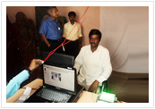
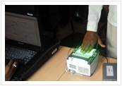

National Population Register (NPR)
 The National Population Register (NPR) will start collecting biometric data of the country’s entire adult population between December 2010 and January 2011. NPR will be the biggest biometric database — including face, fingerprint and iris recognition of the over 1 billion Indian population — that has ever been made. The Unique Identification Authority of India (UIDAI) has been established by the government to implement the scheme and assign unique numbers to all citizens.
The project involved data digitization and multimodal (face, fingerprint and dual iris) biometric enrollment for up to 2 Lakh citizen at 20 locations across 7 states for which IL&FS ETS was appointed as the Nodal Agency by Department of Information Technology (DIT).
Unique Identification Project (UID)
The mammoth digital database will have individual identification details like name, age, address, photographs and biometric signatures like fingerprints. The database will also contain the unique identification (UID) number.
Biometric and IT products are being used by majority of the UIDAI certified enrollment agencies for enrollment activities across India.
Some of the important facets of UIDAI-Smart ID Enrolment Process:
-

- Smart ID has developed best process of Enrolment through rigorous Process Re-engineering
- Its average enrollment per day far exceeds the number specified in the Service Level Agreement (SLA) of UIDAI
- A dedicated team exclusively for Data entry which helps in our pioneered method of Enrolment done through Process of Pre-Enrolment
- Technical Support team is consistently engaged in innovating new techniques to smoothen the process
- Separate dedicated team for awareness and sensitization which helps in enhancing the numbers of enrolments
- Received appreciation from UIDAI as one of the best planning teams as well as strategic planning processes
- Received appreciation from UIDAI for its high-quality work for having minimum percentage of demographic error (0.71%)